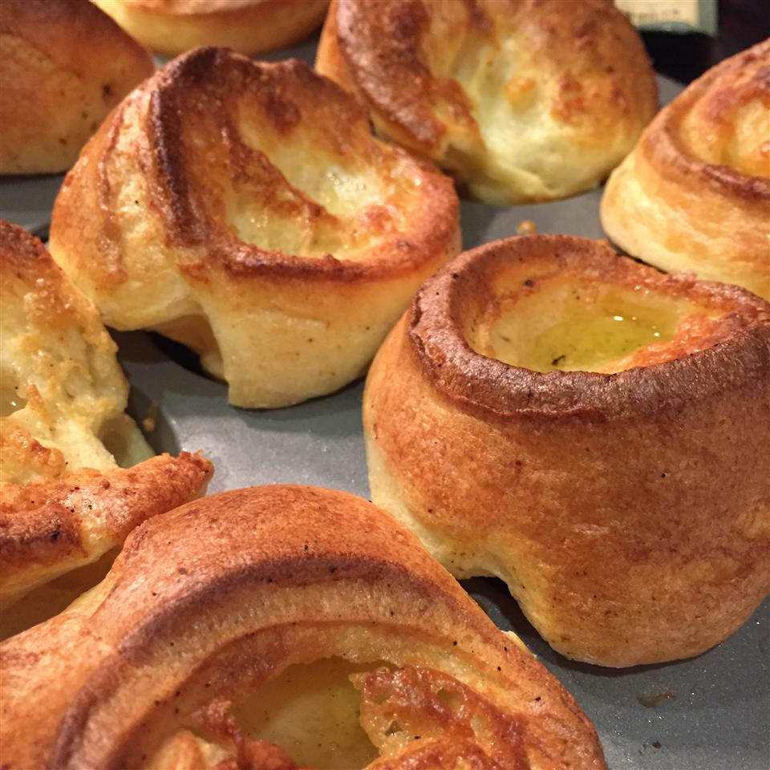

A yummy and traditional addition to the holiday feast. If you intend to make this, the timing has to be juuuuust right. I would suggest preparing the mixture the evening before, and having it ready while the roast beef is cooking. Originally submitted to ThanksgivingRecipe.com.